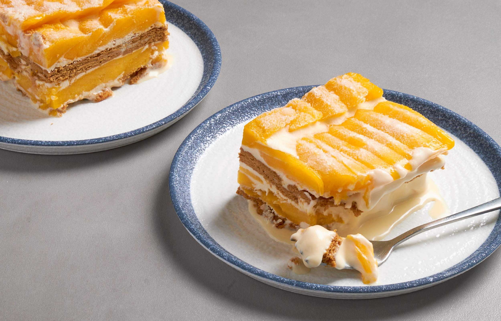

Basil Pasta
Light and aromatic pasta tossed with fresh basil and garlic.
Ingredients
- 250 g pasta
- 2 cups basil leaves
- 3 cloves garlic
- Olive oil
- Parmesan cheese
Step-by-step process
- Cook pasta until al dente, then drain.
- Saute garlic in olive oil and add basil leaves.
- Toss pasta in the basil-garlic mixture.
- Top with parmesan and serve warm.

Parfait Berry
Fresh berry parfait layered with yogurt and crunchy granola.
Ingredients
- Mixed berries
- Greek yogurt
- Granola
- Honey
Step-by-step process
- Place yogurt in a glass or bowl.
- Add a layer of mixed berries.
- Add granola for crunch.
- Repeat layers and drizzle honey before serving.

Garlic Butter Shrimp
Juicy shrimp cooked in rich garlic butter sauce.
Ingredients
- 500 g shrimp
- 4 tbsp butter
- 6 cloves garlic
- 1 tbsp lemon juice
- Parsley
Step-by-step process
- Saute garlic in melted butter.
- Add shrimp and cook until pink.
- Season with lemon juice, salt, and pepper.
- Garnish with parsley and serve hot.

Mango Graham
Creamy chilled dessert layered with mangoes and graham crackers.
Ingredients
- Ripe mangoes
- Graham crackers
- All-purpose cream
- Condensed milk
Step-by-step process
- Mix cream and condensed milk until smooth.
- Layer graham crackers, cream, and mango slices.
- Repeat layers until the dish is full.
- Chill for several hours before serving.